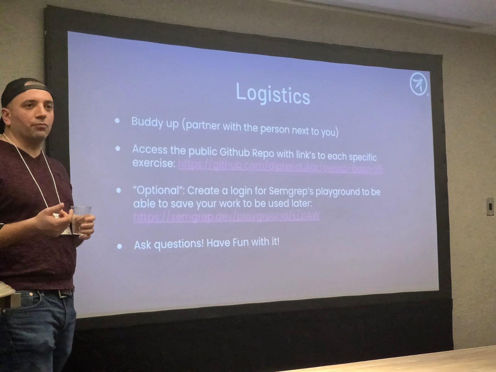
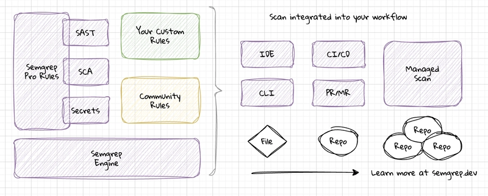

The afternoon at BASC 2026 was one of the most hands-on sessions we've attended. Four instructors from Semgrep and Cloud Security Partners walked a full room through building custom SAST rules from scratch, starting with why grep isn't enough, all the way to multi-hop taint analysis across real codebases.
The workshop followed a clear progression:
- Static Analysis Essentials & Conceptual Fundamentals
- Basics: Patterns, Ellipsis, and Metavariables
- Pattern Operators
- Hands-on Exercises
- Advanced: Taint Mode
Why Not Just Use grep?
The session opened with a simple question: if you want to find all calls to a dangerous function
like gets(), why not just grep for it? The answer is that grep operates purely on
characters, it has no understanding of code structure.
Suppose your codebase contains print as a function call, as a comment, inside a string,
and as part of an identifier like isprinted. Grep matches all four.
Semgrep matches only the actual function call, because it parses source code into an
Abstract Syntax Tree (AST) first.
1. Parse the rule pattern into an AST
2. Parse the target source file into an AST
3. Match both ASTs against each other, semantically, not syntactically
Why Semgrep?
- Open-source with community-contributed language support and rules
- Customizable, patterns are designed for your code and your security requirements
- Multilingual, supports 30+ languages
- No build required, runs on source code directly, so it's fast
- No DSL, Semgrep patterns look like the language they're scanning. No API docs to memorize. If you can read and write code, you can write rules.
- YAML, rules are plain text, version-controllable, and reviewable

Rule Basics: Patterns, Ellipsis, and Metavariables
Test Annotations
Before writing rules, the workshop introduced test annotations in the Semgrep Playground. These let you declare whether a match is expected on the next line:
# ruleid: my-rule-id
dangerous_call() # ← expects a match
# ok: my-rule-id
safe_call() # ← expects NO match
If your rule misses a ruleid line or incorrectly matches an ok line,
the Playground throws an error. This forces you to document intent and validate behaviour
simultaneously.
The Ellipsis Operator ...
The ellipsis matches zero or more occurrences of some element, parameters, arguments,
or statements. Think of it as .* in regex, but for code structure.
subprocess.Popen(...), matches all calls regardless of number or type of argumentspalindrome("..."), matches any string argument, but not integersopen(..., "r", ...), matches calls where"r"appears anywhere in the argsopen("r", ...), matches only when"r"is the first argument
def ... will not work to match a function
declaration, ellipsis is only valid where a sequence of parameters, arguments, or statements would
be syntactically legal. For function names and identifiers, you need metavariables.
Metavariables $VAR
Metavariables match exactly one occurrence of an element, an argument, expression,
or identifier, when you don't know exactly what it will be. They must start with $
and use only uppercase letters, digits, and underscores.
The key distinction: the ellipsis matches zero or more things; a metavariable matches
exactly one. Use gets($ARG) instead of gets(...) when you care
about capturing what was passed.
Pattern Operators
Pattern operators are the building blocks for expressing precise security conditions:
pattern. Removes false positives. Cannot be used alone, must be combined with a pattern.pattern and pattern-not together.pattern-inside. Find problematic code that is not inside code that would mitigate the issue.pattern-regex, but applied only to the value captured in a metavariable. Useful as an alternative to many pattern-either entries.Hands-on Exercises
Three exercises were given to attendees to work through with a partner:
requests.get which specify a string URL as the positional argument, any timeout value, and verify=True. Tests metavariable and positional argument matching.verify_transaction must always be called before make_transaction. Write a rule that flags any call to make_transaction that is not preceded by verify_transaction. Uses pattern-not-inside.// ruleid: find-unverified-transactions-exercise
public void bad(Transaction t) {
make_transaction(t); // ← no verify first, flagged
}metavariable-comparison to check numeric key size at the pattern level.// ruleid: use-of-weak-rsa-key
pvk, err := rsa.GenerateKey(rand.Reader, 1024) // ← 1024 < 2048, flagged
pvk, err := rsa.MultiPrimeKey(rand.Reader, 3, 1024) // ← also flaggedAdvanced: Taint Mode
Pattern-based rules are powerful, but many real vulnerabilities can't be expressed as a single pattern. SQL injection, command injection, XSS, these all share the same structure: untrusted data flows from one place to another.
Taint analysis is a form of dataflow analysis that tracks whether data from a source can reach a sink. Data that originated from a source is called tainted.
Tracing taint step by step
Consider this Java example:
public class DataflowExample {
public static void main(String args[]) throws IOException {
String cmd = args[0];
Runtime.getRuntime().exec(cmd);
}
}args, program arguments are user-controlled inputargs[0] is taintedcmd = args[0] carries the taintcmd is used as an argumentRuntime.getRuntime().exec(cmd), a finding is produced hereWriting the taint rule
In Semgrep, you declare sources, sinks, and optionally sanitizers. Semgrep handles all the paths in between:
rules:
- id: detect-runtime-exec-injection
mode: taint
languages: [java]
severity: ERROR
message: User-controlled input reaches Runtime.exec, potential command injection
pattern-sources:
- pattern: |
void main(String $ARGS[]) { ... }
focus-metavariable: $ARGS
pattern-sinks:
- pattern: |
Runtime.getRuntime().exec($CMD)
focus-metavariable: $CMDSanitizers break the taint chain
If the data passes through a sanitizing function before reaching the sink, Semgrep recognizes the taint is cleared and produces no finding:
String sanitizedPath = filterFilePath(args[0]); // ← taint ends here
String cmd = baseCmd + " " + sanitizedPath;
Runtime.getRuntime().exec(cmd); // ← safe, no finding pattern-sanitizers:
- pattern: filterFilePath(...)Taint Exercises
HttpServletRequest parameters reach a Runtime.exec call. Explores typed metavariables and inline type syntax.res.write or res.send while correctly respecting sanitization calls in between.
What the Workshop Didn't Cover
The instructors were upfront that several advanced features were out of scope for a 2.5-hour session. These are worth exploring on your own:
- Taint propagators, define custom functions that transform but preserve taint
- Taint labels, tag different kinds of taint to reason about them independently
- Generic mode, run Semgrep patterns against file types it doesn't natively parse
- Autofix, have Semgrep automatically rewrite the matching code to the safe version
Key Takeaways
- Semgrep operates on ASTs, not text, this is what makes it semantic and not just a smarter grep.
- Generic rules catch generic bugs. Custom rules catch your bugs, the ones in your framework, your internal APIs, your security requirements.
- The ellipsis (
...) and metavariables ($VAR) are the core building blocks. Master them first. - Pattern operators combine to express precise conditions: AND, OR, inside, not-inside, regex on values.
- Taint mode lets you catch injection-class vulnerabilities end-to-end without tracing every code path manually.
- Always write test annotations alongside your rules, they document intent and prevent future regressions.
In a world with increasing technical and security debt, we cannot play catch-up. We cannot chase vulnerabilities. We must be proactive, and fight the fight from the beginning. , Workshop Closing Slide
Resources
- semgrep.dev/learn, Interactive Semgrep tutorial
- semgrep.dev/playground, Write and test rules live in the browser
- semgrep.dev/r, Open community rule registry
- CloudSecurityPartners/terraform-research, Semgrep rules for Terraform / HCL (from John Poulin's slides)
- Semgrep Academy, free online learning platform with courses on rule writing and secure coding
- Pieter De Cremer's YouTube channel, video walkthroughs on Semgrep and AppSec